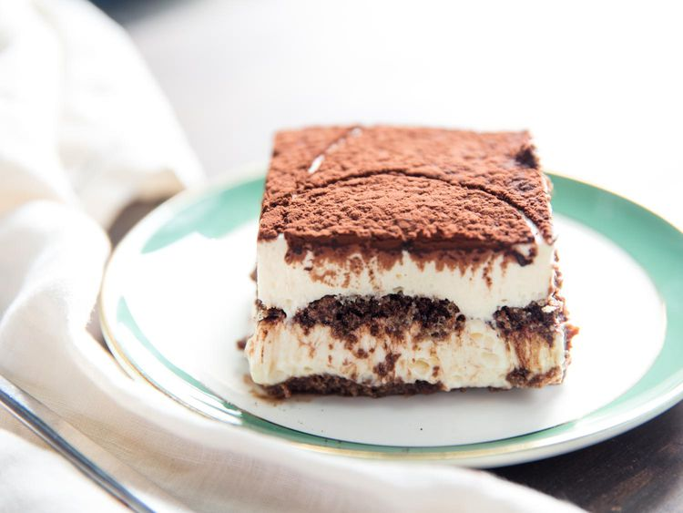

Tiramisu
Home

Description
Tiramisu is an elegant and rich Italian dessert that requires no baking.
It is made by layering crisp ladyfingers dipped in strong espresso coffee.
These layers are alternated with a sweetened, creamy mixture of mascarpone cheese and eggs.
The dessert is finished with a generous dusting of cocoa powder for a touch of bitterness.
It is best served chilled , allowing the flavors to meld together perfectly.
Ingredients
- Ladyfingers: I buy them, but you could make them from scratch.
- Mascarpone: it wouldn't be true tiramisu without mascarpone, but if you absolutely must, you could substitute cream cheese.
- Coffee: I use espresso
- Heavy Whipped cream
- Granulated Sugar
- Vanilla extract: or substitute imitation vanilla
- Cocoa powder: for dusting on top
Steps
- Brew strong espresso and let it cool.
- Whisk egg yolks and sugar until pale.
- Gently fold in the mascarpone cheese.
- Dip ladyfingers quickly into the coffee.
- Layer the cookies in a serving dish.
- Spread the creamy mixture over the layer.
- Repeat layers until the dish is full.
- Dust with cocoa powder and chill.